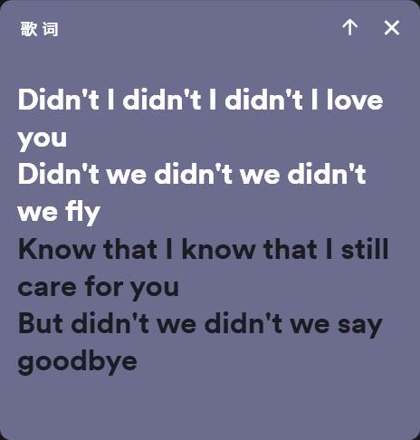

Lyricify 深度盘点：把 Spotify 歌词体验做到极致的开源项目
Lyricify 不止是个歌词挂件——从桌面灵动词岛到移动端整行滚动，从 Media Session 零延迟到 Premium API 配额管理，它在做一件市面上没人做好的事。
为什么要认真盘点 Lyricify
Spotify 的歌词体验长期处于一个尴尬位置：官方原生界面的歌词显示极简、没有逐字对齐、不支持卡拉 OK 效果；而第三方方案要么质量参差不齐，要么只能覆盖 Windows 单一平台。Lyricify 在这个夹缝里做了一件事——用工程化的方式把歌词体验的天花板往上推了一大截。它的主页上写着一句定位——「把歌词体验做完整」，下文一个个能力域拆完你会发现这不是营销话术。
它不是什么新玩具，已经迭代到第四代，Windows 桌面版与移动版的安装包在官方下载页都能拿到；GitHub 上标着"正在维护"，功能矩阵完整、架构清晰、社区活跃。对于任何一个重度 Spotify 用户来说，值得系统性盘点一遍——不是看它有多少功能，而是理解它为什么能把一个看似简单的"显示歌词"问题，做出好几个维度的产品设计。
能力域一：歌词显示的多种形态
Lyricify 4 最直观的印象就是"不把歌词只当文字"。它提供了至少三种显示模式，每一种对应不同的使用场景：
- 桌面歌词：最基础的形态，窗口化悬浮在屏幕上，支持透明度、字体、颜色自定义。适合边看视频边听歌，或者多显示器上把歌词甩到副屏。
- 灵动词岛（Dynamic Lyrics）：借鉴 macOS 灵动岛的交互，把歌词做成一个半透明的小浮窗，随时间推进、逐字淡入淡出。这个模式的妙处在于它不抢屏幕注意力，又能让人一眼瞄到歌词进度。
- Byland 模式：按专辑封面提取主色调做背景渐变，歌词跟随节奏脉动。更偏展示型，适合做直播背景或者放歌给朋友听的时候开着。
这三种模式共用同一套歌词数据和时间同步引擎，所以切换过程完全丝滑，不会出现时间错位。
能力域二：双通道播放信息架构
Lyricify 4 背后有一套容易被忽略但极其重要的架构设计——它同时维护两条独立的播放信息通道，根据场景自动选择最优路径：
通道一：Spotify Web API（云端）通过 OAuth 授权拿到 access token，向 Spotify 服务器请求当前播放状态。跨设备、跨平台都能工作（手机放歌电脑也能读到），但有 Premium 门槛（免费账号只能读不能写）、网络延迟、还有 429 限流的风险。
通道二：Media Session（本地）直接读 Windows 系统级的媒体控制接口。任何接入了这套接口的播放器——Spotify 桌面客户端、Apple Music、甚至 Chrome 浏览器里的 Spotify Web Player——都会把"正在播放什么、当前进度、能不能控制"暴露给系统。优点是零延迟、免费账号也能控制播放，缺点是只能管本机、只有播放器在运行时才有信号。
两条通道互补的设计思路很清晰：Web API 负责跨设备场景，Media Session 负责本机低延迟场景。Lyricify 会智能判断当前哪条通道连接正常、哪条延迟更低，自动切换优先使用哪条。这套设计也是为什么很多免费账号用户依然能获得非常精准的歌词同步体验——两条通道各自的边界和切换逻辑，官方文档站里有专门章节配图讲得很细。
能力域三：移动端的极简哲学
Lyricify Mobile 没有照搬桌面端的多模式思路，而是走了另一条路——整行滚动 + Apple Music 风格观感。
它的界面比桌面端极简得多，只有一种模式：
- 只显示当前行前后三到四行，上一行逐渐淡出，下一行排队登场
- 译文自动跟在原文下方，原文和译文一起滚动、一起高亮
- 背景色从专辑封面提取主色调，做渐变和模糊
- Android 12 及以上自动获得毛玻璃效果（老系统没有不是故障）

移动端目前没有逐字卡拉 OK 效果，开发者表示暂无加入计划。这是一个明确的取舍——移动端追求的是"看一眼就懂、跟着唱就行"的体验，不是桌面端那种精细到每个字的对齐感。两端的歌词库按 Spotify 账号隔离，换账号登录就换一套歌词数据，在电脑上修正的歌词，移动端重新打开就能生效。
能力域四：歌词管理的完整生态
Lyricify 不只是显示歌词，它提供了一整套歌词生命周期管理工具：
- 导入：支持从本地文件、Spotify 已有歌词库、在线歌词源导入
- 标记：对歌词做质量标记（准确/有延迟/缺失段落/错误）
- 修正：手动微调时间差，或编辑歌词文本
- 曲目管理：按专辑、艺人、播放列表组织歌词，快速定位问题曲目
在主界面点左下角的专辑图片，会打开歌曲详情面板，里面能看到 ISRC（国际标准录音代码，全球唯一标识一首歌）、Spotify 内部曲目 ID、艺人数量、流派等元信息。ISRC 和曲目 ID 都可以一键复制，这对向开发者反馈问题时定位具体曲目特别有用——你不用再解释"就是那个歌手唱的那首歌"。
能力域五：Premium 与免费的真实边界
关于 Lyricify，最容易被误解的就是 Premium 和免费账号的区别。先澄清几个关键事实：
429 限流不区分账号类型，只区分 API Client。公共 Client 的配额是所有用户共享的，Premium 本身不增加这份公共配额。Premium 的真正价值是让你有资格配置自定义 API Client——配了之后拿到独立配额，绕过公共 Client 的排队。
免费账号能做什么：
- 显示歌词（包括逐字卡拉 OK 效果）
- 桌面歌词、灵动词岛、Byland 模式
- 歌词管理、导入、标记、曲目管理
- 全局快捷键、时间差校准、同步频率调整
- 通过 Media Session 实现基本播放控制（播放/暂停/上下曲/进度）
免费账号做不到什么：
- 任意点歌（Media Session 正常时可以切上下曲，但不能随便跳到某一首）
- 自定义 API Client（429 风险自担）
- 内置播放内核
- 智能引擎（消耗更高配额的机器学习推荐）
Store 版 ≠ Premium 订阅。Microsoft Store 版是一次性付费、解锁外观自定义（配色主题编辑器、Byland 参数），和 Premium 订阅完全独立。买了 Store 版不等于有了 Premium，反之亦然。这套双轨收费设计需要开发者在文案里反复澄清，足见两者边界之容易混淆。
能力域六：限流机制的完整知识
429 是 Lyricify 讨论区里被提及最多的问题，本质上它不是 Lyricify 的 bug，而是 Spotify 平台层面的限流机制。
触发 429 的最主要操作是同步频率——默认 2 秒一次，一天下来就是几万次请求。同时开 Lyricify 4 + Lyricify Mobile + Web Player，多个实例叠加请求时更容易触发。
普通 429 和超长 429 需要区分对待：
- 普通 429：等待秒数在几百秒以内（通常几十秒到三分钟），自动恢复
- 超长 429：等待秒数达到几千到几万秒（几小时甚至超过一天），通常由连续使用超 10 小时、没有播放内容时让 Lyricify 空转、多设备同时高频率请求触发
免费账号的应对策略只有四种：调高同步频率、开启 Media Session 让本地控制走不消耗 Web API 的通道、关掉 Lyricify（尤其是没音乐在放的时候）、碰运气等配额恢复。唯一的根治方法是 Premium 订阅 + 配置自定义 API Client，拿到独立配额。
短板也要说
盘点不能只说亮点，客观指出局限：
- 免费账号的 429 问题是硬伤。如果你是重度用户、长时间运行、又没有 Premium，迟早会遇到限流。调高同步频率能缓解，但歌词同步会变得不精准。
- 移动端功能不如桌面端完整。没有逐字卡拉 OK，没有歌词管理工具，高级播放控制（进度拖动、循环模式）还是要回到 Spotify。
- 依赖 Windows 平台特性。Media Session 是 Windows 10 引入的功能，老版本 Windows 支持不完整，Windows 7/8 完全不支持。MacOS 和 Linux 用户只能走 Web API 通道。
- 歌词库质量取决于来源。Lyricify 支持导入多个来源的歌词，但质量参差不齐。一些小众曲目可能需要手动修正时间差。
什么样的人该用它
- 重度 Spotify 用户，追求最佳歌词体验：如果你每天都听歌、习惯跟着歌词唱，Lyricify 的逐字卡拉 OK + 灵动词岛组合体验，是官方界面给不了的。Media Session 零延迟让歌词和歌声几乎完全对齐，这一点在唱到快歌的时候差距特别明显。
- 想折腾的开发者和极客：Premium 用户可以配置自定义 API Client、调整同步频率、微调时间差、甚至自己维护歌词导入源。整个配置过程有完整文档覆盖，踩坑成本低。
- 移动 + 桌面双端都用的人：电脑上用 Lyricify 4 做精细管理和调校，手机上用 Lyricify Mobile 做日常看歌词，两端通过 Spotify 账号自动同步歌词数据。虽然移动端功能简化了，但跨设备歌词同步这条链路是通的。
写在最后
「把歌词体验做完整」——这句写在主页上的定位，底气来自它在几个关键问题上都给出了工程化的解决方案：双通道播放信息架构解决了延迟和跨设备的矛盾，多种显示模式覆盖了不同场景的需求，Premium 分层设计让免费用户也能获得核心歌词体验。
如果你想深入了解完整功能矩阵，文档站里那份极其详尽的功能清单和故障排查手册，值得花一个下午通读。429 限流、Media Session 连接、Premium 订阅价值的细节，远比一篇博客能覆盖的丰富。
相关资料我同步到了三个仓库：GitHub 主库、Gitee 镜像、GitCode 同步库，方便不同偏好的用户获取。仓库里除了软件本身的分发包，还附带了完整的中文文档目录和歌词管理工具的使用示例——开源社区维护的好处就是这些资料永远在那里，不会因为某个商业决策而消失。